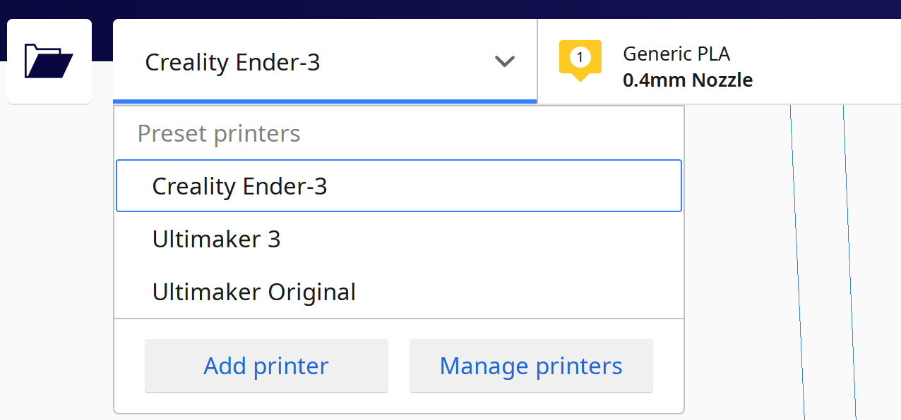
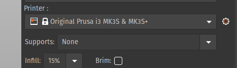
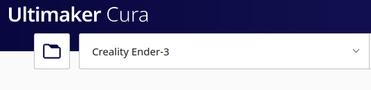
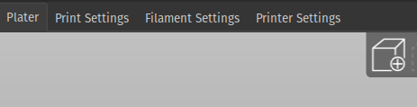
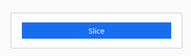
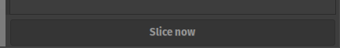
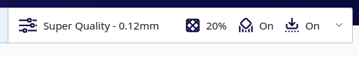
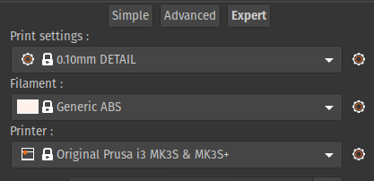

Selecting a 3D printer, importing a file, and slicing it.
To slice a 3D model for printing, you import either an STL or an OBJ file into a slicer (common ones are Cura and Prusa Slicer). Then you select the printer you are using. Then you hit the slice button. Once sliced, you transfer the GCode file to an SD card of a thumb drive, depending on the printer (Most common ones use mini SD cards).
<

Selecting the printer in Cura. Image by author.

Selecting the printer in Prusa. Image by author.

Then you choose the import STL button (top left, looks like a folder icon in Cura). Image by author.

Then you choose the import STL button (middle right, looks like a cube with a plus in Prusa slicer). Image by author.

The Cura slice button. (Commonly found on the bottom right).

The Prusa Slicer slice button. (Commonly found on the bottom right).
Where to find slicer settings and what they are.
This is relatively simple. Slicer settings are methods to change how the slicer converts a model into commands to send to the printer. They are often found in a tab on the right side of the program (Cura and Prusa Slicer). There are commonly multiple preset options for print quality and speed. These are typically listed with the preset’s layer height in the title. Changing these is the most basic form of adjusting the quality/speed of the 3D print.
<

Changing the slicer setting in Cura. Selecting this dropdown will allow the user to change the basic setting. Image by author.

Chaning the printer presets in Prusa Slicer. Selecting the Print settings dropdown will allow the user to switch between both pre-installed and user created presets. Image by author.